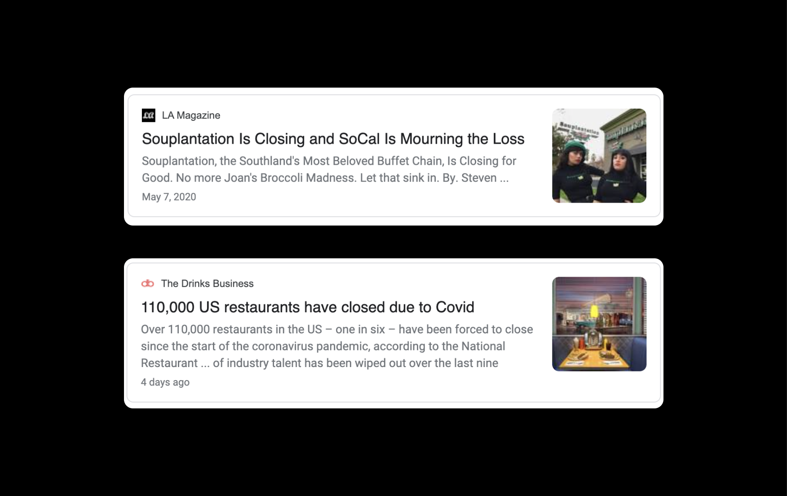
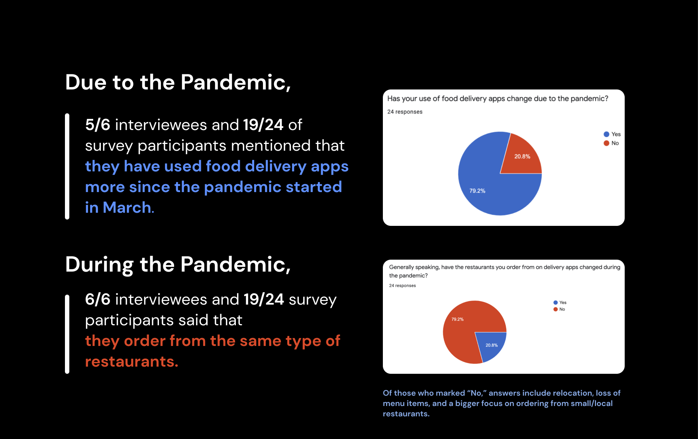
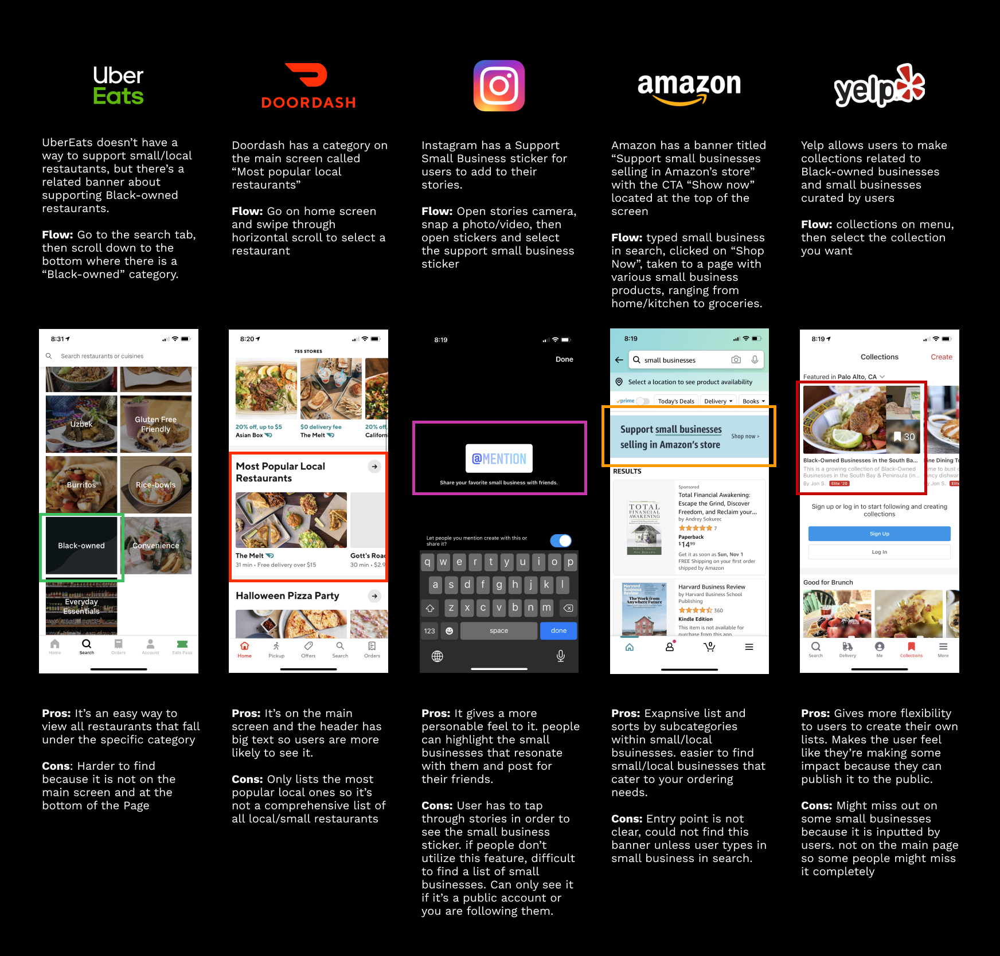
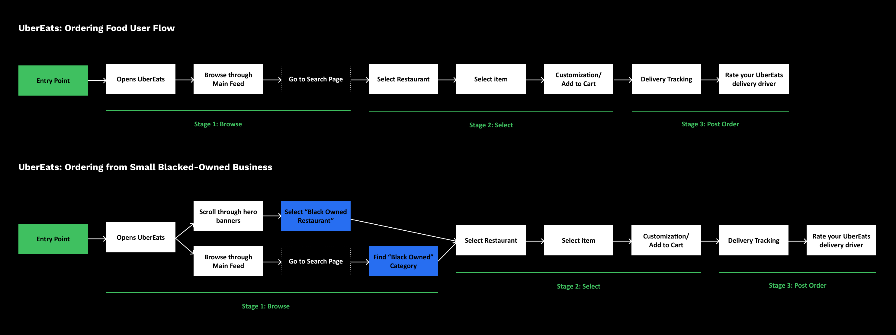
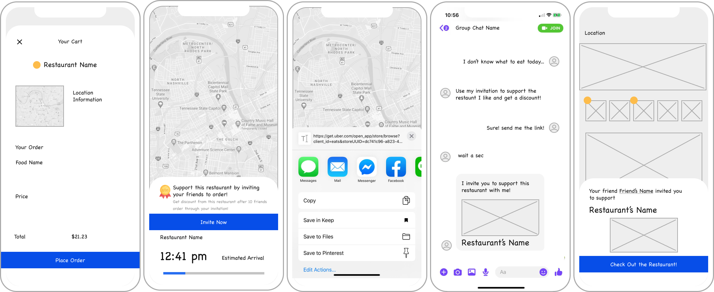
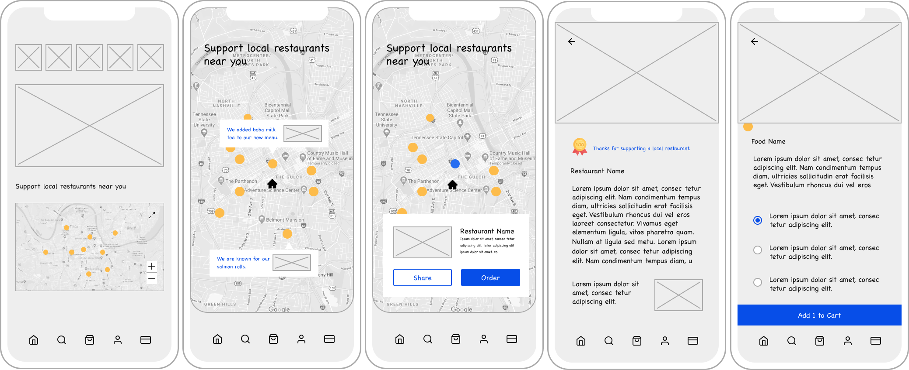
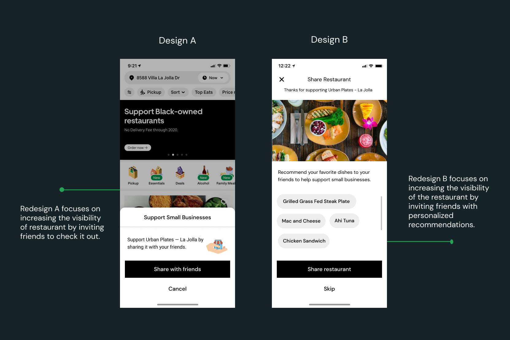

Sustain Small Businesses with Dish Recommendations
Overview
Project
Alison Chen, Daniel Li, Jasmine Tu
Scope
Product thinking, Interaction Design, Visual Design
Tool
Figma
Problem
Since March 2020, many small restaurants have not been able to operate in full capacity and have been losing money due to the effects of the pandemic. Without a way to sustain themselves, many will be forced to shut down operations. Taking this into consideration, we plan on tackling the problem space of sustaining small businesses using online tools during this time period.
Why is this important?
This issue is important because small restaurants have been heavily impacted by the pandemic. With users given the option to tip their delivery driver, it only makes sense that they are given the option to support small restaurants on the app. Food delivery has become the new normal so it’s imperative that we don’t neglect them.
We want to extend a feature that incentivizes users to help sustain their favorite small restaurants not only by ordering food but by other means. We chose UberEats in particular because all three of us are avid users of the app and interested in exploring their design system.
Research
Our research goal is to gain a deeper understanding of the sentiment that UberEats users have about food delivery and small businesses during the pandemic. We are interested in collecting data to see whether users want an easy way to support and donate money to small businesses and what factors would motivate them to do so.
We used mixed methods for user research. We conducted interviews via Zoom with 6 participants in our target audience (ages 18-29) who have used food delivery apps.

We found that most users select the restaurant to order from based on the deal and the cuisine they are craving by scrolling through the main screen. Although users want to try new restaurants, they generally end up ordering from the same few on a rotation (pain point).
“I wish there was a social and personal aspect to UberEats so I could see what my friends have ordered in the past to help me out when I’m struggling." — UberEats User
Problem Statement
Many small/local food businesses are struggling and losing money from the pandemic. UberEats users (ages 18-29) don’t know which restaurants have been impacted the most and often order food from a rotation of the same ones.
How might we help sustain small/local food businesses by increasing its visibility and discoverability to users?
More Research - Compeitive Audit
It is important to note that UberEats has a Black-owned restaurants category but does not have a way to support local/small restaurants during the pandemic. It was insightful to document the pros and cons for each app—Instagram using stickers, Amazon and Doordash using banners and Yelp using collections.
Learning more about the workflow
UX Workflow
A general user would go through these stages: browsing, selecting, waiting (post-order). We also analyzed how to find small blacked-owned businesses to understand how UberEats is currently solving the problem.
Proposed Solutions
Design A.
Design A is recommendations to a friend post order. While waiting for the order, we imagine the system to prompt users to show support to the small businesses by sharing their order with their friends. The entry point for this flow would be when the delivery tracking screen pops up. This personalization is inspired by Yelp and Instagram’s features of creating collections and sharing stories.
Design B.
Design B is presenting a map view of restaurants with icons that would help users to quickly identify the small/local restaurants around them. This entry point would be on the main screen as a section. Users would click on it and the map would enlarge. It is an easy way to view a list of small/local restaurants.
Iterated Lo-fi: Design A + B
Learning from some lo-fi user testing
1. Section called support small restaurants near you on the home screen.
2. Tap into the section and see a list of small restaurants
3. Tap into a restaurant and after ordering, there is an option to share the small restaurant with a friend.
Hi-fi Design Decisions
Homepage Feed Version 1.0
Redesign A focuses on increasing the visibility of restaurant by inviting friends to check it out.
Redesign B focuses on increasing the visibility of the restaurant by inviting friends with personalized recommendations.
Homepage Feed Version 2.0
Because we chose to go with Design B — which highlighted dishes, rather than the restaurant—we also revised the screen that users would see once their friend sends them dishes from a restaurant.
On this screen, the recipients would see the dishes as well as the feedback and icons that their friends had left for the recommended dishes. This would provide more information to users who may have trouble selecting what dish to order from a recommended restaurant, increasing the likelihood of them ordering from a small business.
Final Design
Recommend Dishes
With a few clicks, you can support small businesses by recommending your favorite dishes to your friends!
Support Small Businesses Section
Special dishes from small businesses are highlighted in the main feed.
Check out what your friends recommended!
Users can easily visualize what their friend's favorite dishes from small businesses and save the order!
Reflection
1. When designing, incorporate the pyschology of human minds.
Making people hand out money to support business during the pandemic isn't easy. Ideas like donation or Ads, doesn't create enough incentive to get out of the way to order from small business. Always put yourself in the shoe if you are a target user. We went with the recommendation system, because we could totoally see ourselves ordering from friend's recommendations!
2. Thankful for the essential workers 🙏🏻
I want to say thank you for the courtier out there delivering food for us. Thank you for helping businesses survive during this time and allowing people to enjoy delicious food at home!